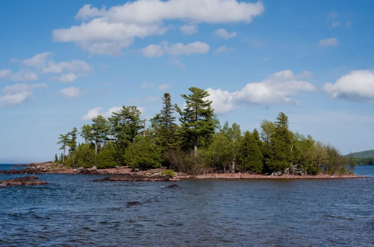
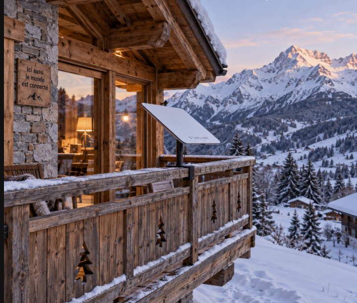
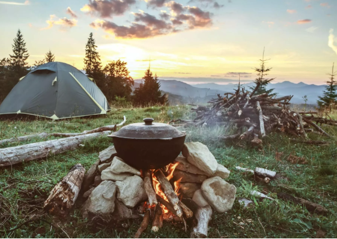

Starlink au Canada
Au Québec et dans le reste du Canada, Starlink est souvent choisi pour les zones mal desservies par la fibre ou le câble : campagnes, pourvoiries, travail à distance, communautés éloignées. La couverture et les forfaits évoluent : consultez la carte officielle.

Hiver et climat
- Le terminal fond en principe la neige légère ; en cas d’accumulation importante, un dégagement manuel peut être nécessaire.
- Protégez les câbles du gel et des rongeurs si l’installation est extérieure.
- En période de forte neige ou de verglas, prévoyez un accès sécuritaire au toit ou au mât.

Types d’usage courants
- Résidentiel — domicile fixe avec adresse de service.
- Mobilité / voyage — forfaits adaptés (selon offre en vigueur au Canada).
- Entreprise / agriculture — besoins de bande passante et de priorité variables.

Réglementation et taxes
Facturation en dollars canadiens selon les périodes ; taxes fédérales et provinciales applicables. Ce guide ne remplace pas un conseiller fiscal ou juridique.
Si vous commandez depuis l’étranger pour une installation au Canada, Starlink indique que le prix suit le lieu d’installation saisi à la commande (tarif et taxes canadiennes affichés au checkout selon l’adresse de service). Confirmez le total avant de payer.
Pour avoir plus de détails sur les forfaits au Canada, cliquez sur Starlink.com.